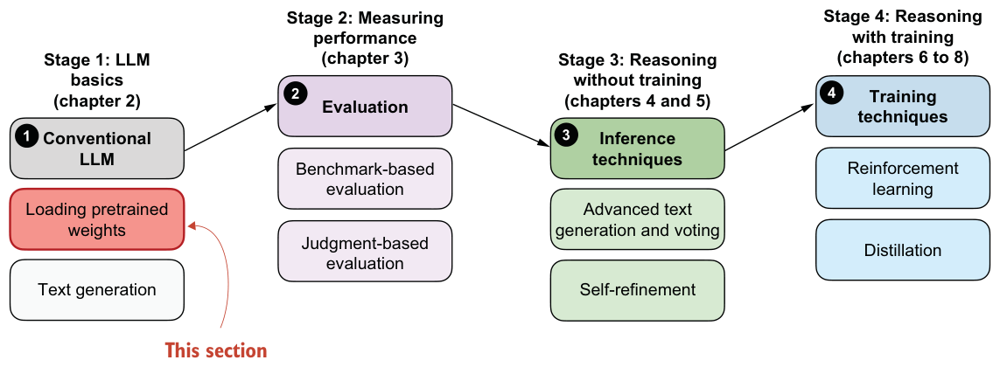
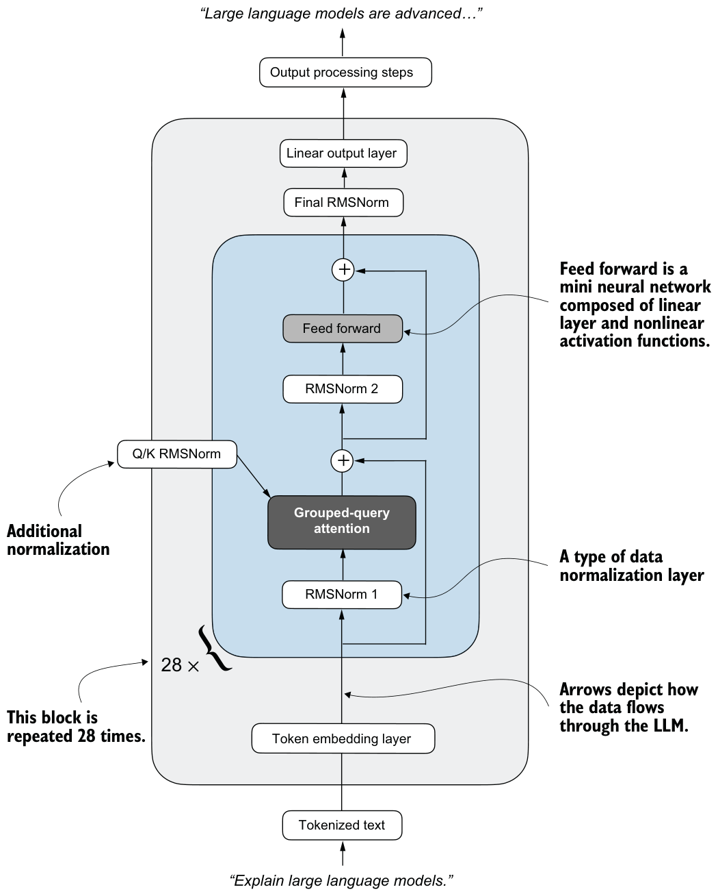

2.5Loading pretrained models
In the previous section, we loaded and familiarized ourselves with the tokenizer, which prepares the input data for an LLM and converts LLM outputs back into human-readable text. In this section, we’ll load the LLM itself with its pretrained weights, as shown in figure 2.7. Once this base model is in place, the following chapters will build directly on it by evaluating it, prompting it in different ways, and eventually training it into a stronger reasoning model.

This book uses Qwen3 0.6B as its pretrained base model. The “0.6B” in the name indicates that the model contains approximately 0.6 billion weight parameters.
Why use Qwen3? After carefully evaluating several open-weight base models, I chose Qwen3 0.6B for the following reasons:
- For this book, we want a small yet capable open-weight model (open-weight models are models whose trained weights are publicly downloadable) that can run on consumer hardware.
- Qwen3 offers both a base model (the focus of our reasoning model development) and an official reasoning variant that we can use as a reference for evaluation purposes.
In the spirit of building things “from scratch,” this book uses a custom reimplementation of Qwen3 that I wrote in pure PyTorch and that is entirely independent of external LLM libraries. The emphasis of this reimplementation is on code readability and tweakability in case you want to modify it later for your own experiments. Despite being built from scratch, this implementation remains fully compatible with the original pretrained Qwen3 model weights.
This book does not cover the Qwen3 code implementation in depth. That topic alone would fill a separate book, similar to my Build a Large Language Model (From Scratch) book. Instead, this book focuses on implementing reasoning methods on top of a base model, in this case, Qwen3. If you’re interested in more details about Qwen3 and the model code, see appendix C.
Before we load the model, we can specify the device we are going to use, namely, a CPU or GPU. The code in the following listing automatically selects the best available device.
def get_device(enable_tensor_cores=True):
if torch.cuda.is_available():
device = torch.device("cuda")
print("Using NVIDIA CUDA GPU")
if enable_tensor_cores:
major, minor = map(int, torch.__version__.split(".")[:2])
if (major, minor) >= (2, 9):
torch.backends.cuda.matmul.fp32_precision = "tf32"
torch.backends.cudnn.conv.fp32_precision = "tf32"
else:
torch.backends.cuda.matmul.allow_tf32 = True
torch.backends.cudnn.allow_tf32 = True
elif torch.backends.mps.is_available():
device = torch.device("mps")
print("Using Apple Silicon GPU (MPS)")
elif torch.xpu.is_available():
device = torch.device("xpu")
print("Using Intel GPU")
else:
device = torch.device("cpu")
print("Using CPU")
return deviceNote that if you have a modern NVIDIA GPU (based on the Ampere architecture or newer), the get_device() function automatically enables Tensor Cores for faster matrix multiplications when enable_tensor_cores=True. This can slightly change floating-point rounding, but it does not noticeably affect results in this book, and the speed advantage on newer cards is worth it. On non-NVIDIA devices, these settings are ignored.
Using the code from listing 2.1, we can obtain the device as follows:
device = get_device()While GPUs generally provide substantial speed and performance gains, it can be helpful to run the remaining code in this chapter on the CPU for compatibility and debugging. You can temporarily override the automatic selection by explicitly setting the device:
device = torch.device("cpu")After you’ve finished the chapter and verified that the code works properly on the CPU, you can remove or comment out the manual override and rerun the code. If your system has a GPU, you should then see better performance.
Before we load the model and put it onto the selected device, we first need to download the weights for Qwen3 0.6B. These files are required to initialize the pretrained model correctly. In the previous section, we called the download_qwen3_small() function with tokenizer_only=True to download only the tokenizer files. Here, we’ll use the same function but set tokenizer_only=False so that the model weights are downloaded as well:
download_qwen3_small(kind="base", tokenizer_only=False, out_dir="qwen3")The output is as follows:
qwen3-0.6B-base.pth: 100% (1433 MiB / 1433 MiB)
✓ qwen3/tokenizer-base.json already up-to-date(There is a checkmark next to the tokenizer because we already downloaded it in the previous section.)
Now that we’ve downloaded the model weights, we can instantiate a Qwen3Model class and load the pretrained weights via PyTorch’s load_state_dict method:
from reasoning_from_scratch.qwen3 import Qwen3Model, QWEN_CONFIG_06_B
model_path = Path("qwen3") / "qwen3-0.6B-base.pth"
model = Qwen3Model(QWEN_CONFIG_06_B)
model.load_state_dict(torch.load(model_path))
model.to(device)Note that if the device setting is "cpu", the model.to(device) operation is skipped because the model already resides in CPU memory by default.
After executing the preceding code, you should see the following output. (If you are not running the code in an interactive environment like a Jupyter notebook, you will have to run print(model) to see the output.)
Qwen3Model(
(tok_emb): Embedding(151936, 1024)
(trf_blocks): ModuleList(
(0-27): 28 x TransformerBlock(
(att): GroupedQueryAttention(
(W_query): Linear(in_features=1024, out_features=2048, bias=False)
(W_key): Linear(in_features=1024, out_features=1024, bias=False)
(W_value): Linear(in_features=1024, out_features=1024, bias=False)
(out_proj): Linear(in_features=2048, out_features=1024, bias=False)
(q_norm): RMSNorm()
(k_norm): RMSNorm()
)
(ff): FeedForward(
(fc1): Linear(in_features=1024, out_features=3072, bias=False)
(fc2): Linear(in_features=1024, out_features=3072, bias=False)
(fc3): Linear(in_features=3072, out_features=1024, bias=False)
)
(norm1): RMSNorm()
(norm2): RMSNorm()
)
)
(final_norm): RMSNorm()
(out_head): Linear(in_features=1024, out_features=151936, bias=False)
)This output is a summary of the Qwen3 0.6B base model architecture, as printed by PyTorch. It highlights the model’s core components: an embedding layer, a stack of 28 transformer blocks, and a final linear projection head. Each transformer block includes a grouped-query attention mechanism and a multilayer feed-forward network, along with normalization layers throughout.
These components are also illustrated in figure 2.8 for readers familiar with LLM architectures, but a detailed understanding of this architecture is not required for this

book. Since we are not modifying the base model itself, but rather building reasoning methods on top of it, you can safely treat the architecture as a black box for now. If you’re interested, you can find more information on these components, such as RMSNorm, in appendix C.
We have now loaded a pretrained model that should be capable of generating coherent text. In the next section, we’ll code a text generation function that feeds tokenized data into the model and returns the output in a human-readable format.